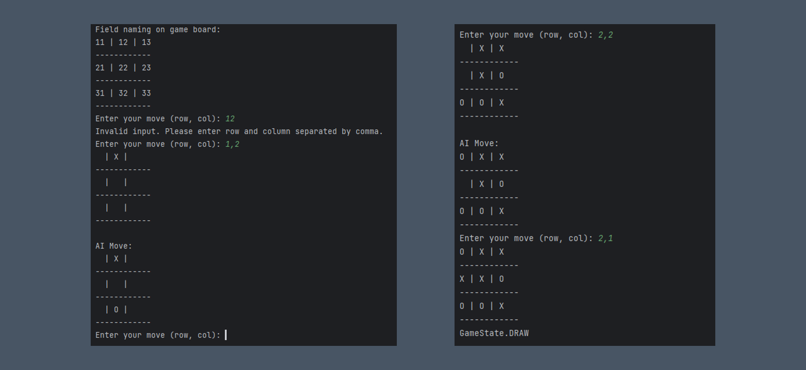

Tic Tac Toe
These Python scripts implement Tic-Tac-Toe games with different approaches. One version uses object-oriented programming with a clear separation of game logic, while the other employs procedural programming, handling game logic directly within functions.